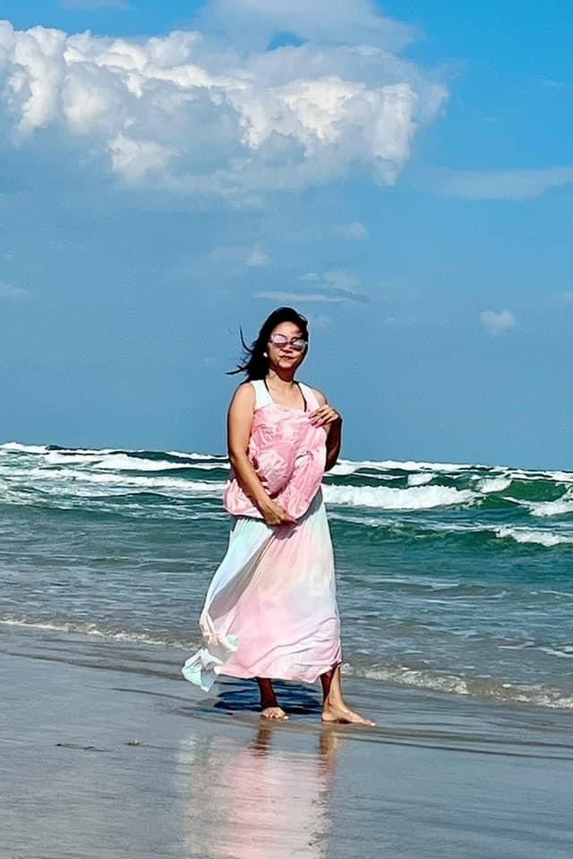

* Primary Font: "Roboto"
* Backup Font: Arial, sans-seri
* Image 1:
* Image 2:
* Image 3:
Home Page:
Welcome to ThienKim Le's Personal Website.
As a seasoned software developer, I've dedicated myself to mastering various programming languages, frameworks Hello, and welcome to my personal website! My name is ThienKim Le, and I'm passionate about software development. Here, you'll find a showcase of my skills, projects, and experiences in the world of software development.
As a seasoned software developer, I've dedicated myself to mastering various programming languages, frameworks, and technologies. Through this website, I aim to share my journey, insights, and expertise with fellow enthusiasts, potential employers, clients, and collaborators.
Feel free to explore my portfolio, read my blog, and get in touch if you'd like to collaborate or learn more about my work. Thank you for visiting, and I hope you find inspiration and valuable insights during your time here.
About Me Page:
Get to Know ThienKim Le.
Welcome to my About Me page! I'm ThienKim Le, a software developer with a passion for innovation and problem-solving. Since the early days of my career, I've been fascinated by the endless possibilities that technology offers, and I've dedicated myself to mastering the craft of software development.
With 2 years of experience in the industry, I've had the opportunity to work on a diverse range of projects, from web applications and mobile apps to enterprise software solutions.My expertise spans across various programming languages, including C++, Python, Java, Java Script, Unix... and I'm always eager to learn and adapt to new technologies and methodologies.
Outside of coding, I enjoy traveling, gardening, and shopping. These activities not only help me recharge and stay balanced but also inspire creativity and innovation in my work.
Thank you for taking the time to learn more about me. I'm excited to share my journey with you and to explore new opportunities together.
Portfolio Page:
Explore My Portfolio
Welcome to my portfolio! Here, you'll find a curated collection of projects that showcase my skills, expertise, and creativity as a software developer. From web applications and mobile apps to open-source contributions and personal projects, each endeavor represents a unique challenge and an opportunity for growth.
Feel free to browse through my portfolio and explore the projects that pique your interest. If you have any questions or would like to learn more about a specific project, don't hesitate to reach out. I'm always eager to share my experiences and insights with fellow enthusiasts and potential collaborators.
Thank you for visiting my portfolio, and I hope you find inspiration and value in the work showcased here. I look forward to connecting with you and exploring new opportunities together.
Contact Page:
Get in Touch
Thank you for visiting my website! If you have any questions, inquiries, or would like to discuss a potential collaboration, please don't hesitate to get in touch. I'm always open to new opportunities and would love to hear from you.
You can reach me via email at thienkim.le@g.austincc.edu or connect with me on LinkedIn https://www.linkedin.com/in/thienkim-le/. Alternatively, you can use the contact form below to send me a message directly.
I look forward to connecting with you and exploring how we can work together to bring your ideas to life. Thank you for considering me for your project, and I hope to hear from you soon.